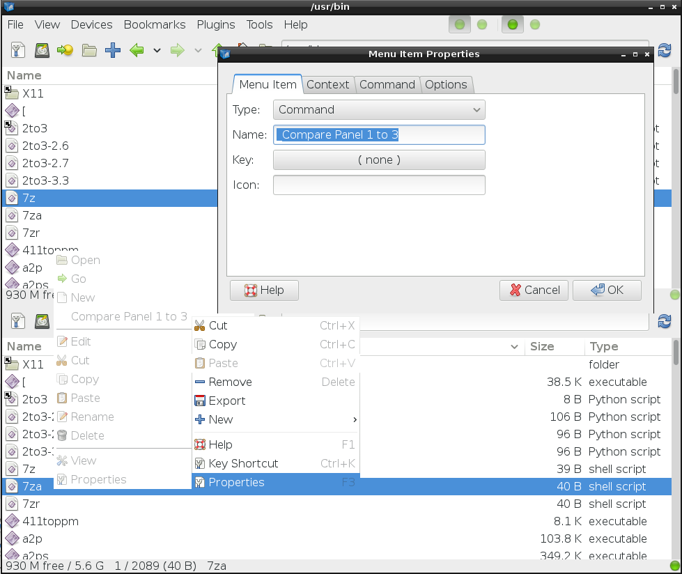
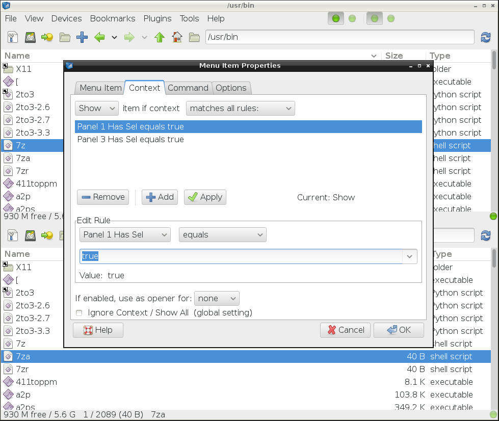
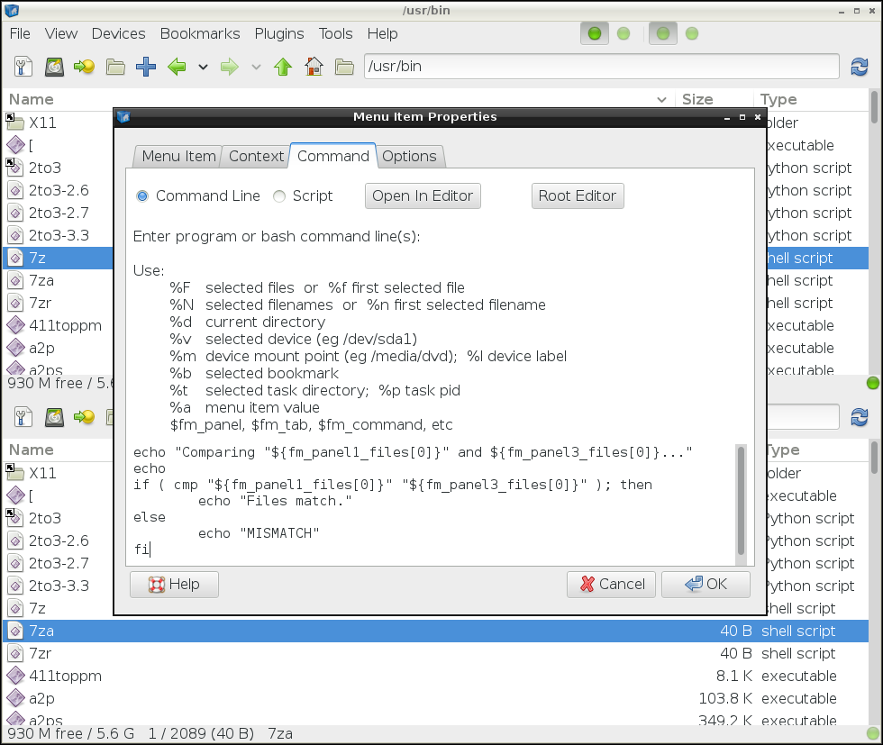
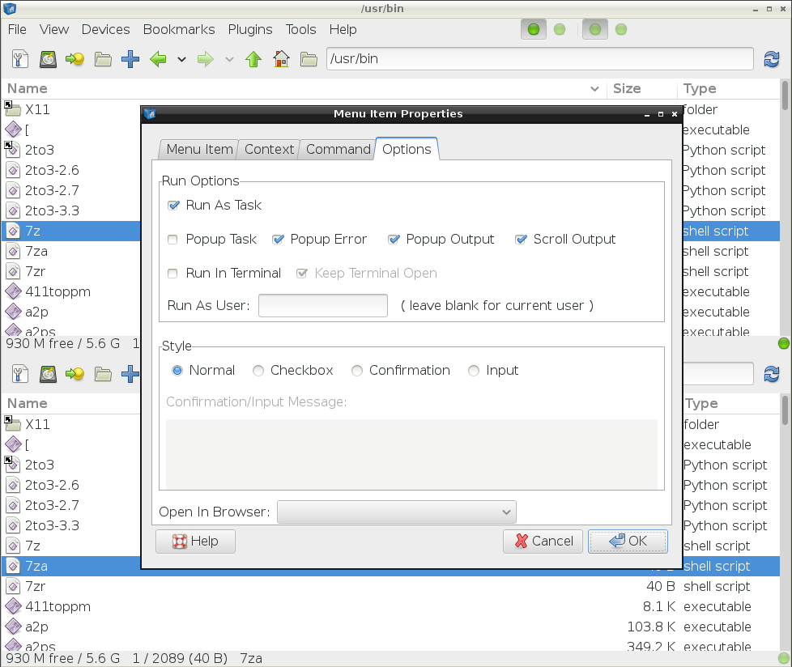
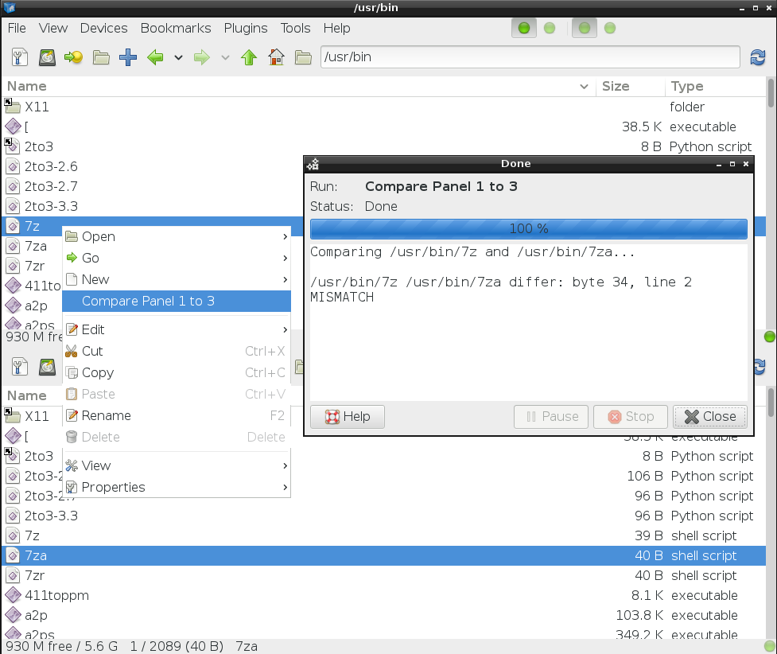

Official SpaceFM Screenshots
v0.7.2 thru 0.9.1, GTK2 & GTK3 picturedSimple Icon View ( SpaceFM 0.7.2 GTK2 )
Icon View With Toolbar ( SpaceFM 0.7.2 GTK2 )
Icon View With Tree ( SpaceFM 0.7.2 GTK2 )
Icon View Editing Bookmarks ( SpaceFM 0.7.2 GTK2 )
Icon View Dual Panel ( GTK2 )
Icon View Dual Panel With Tabs ( SpaceFM 0.7.2 GTK2 )
Icon View Triple Panel ( GTK2 )

List View Rename/Move Dialog ( SpaceFM 0.7.2 GTK2 )

List View With Tasks Running ( GTK2 )

List View And Thumbnail Panel ( SpaceFM 0.7.2 GTK2 )

List View Dual Panel ( SpaceFM 0.7.2 GTK2 )

Quad Panel With Different Fonts ( SpaceFM 0.7.2 GTK2 )

Got Multitask? All The Flaps Unbuckled ( SpaceFM 0.7.2 GTK2 )

Format Dialog ( SpaceFM 0.7.2 GTK2 )

Device Properties ( SpaceFM 0.7.2 GTK2 )
Change Device Icons ( SpaceFM 0.7.2 GTK2 )

Change Device Display Name ( SpaceFM 0.7.2 GTK2 )

Select Visible Columns ( SpaceFM 0.7.2 GTK2 )

Change Permissions As Root ( SpaceFM 0.7.2 GTK2 )

Design Mode - Add New Custom Command To Menu ( SpaceFM 0.9.1 GTK3 )

Design Mode - Edit Custom Item Properties ( SpaceFM 0.9.1 GTK3 )

Design Mode - Set Menu Item Context ( SpaceFM 0.9.1 GTK3 )

Design Mode - Set Custom Command ( SpaceFM 0.9.1 GTK3 )

Design Mode - Set Custom Command Options ( SpaceFM 0.9.1 GTK3 )

Run Custom Command ( SpaceFM 0.9.1 GTK3 )
See more SpaceFM Screenshots & Screencasts...
|
Updated 2013-11-20
|